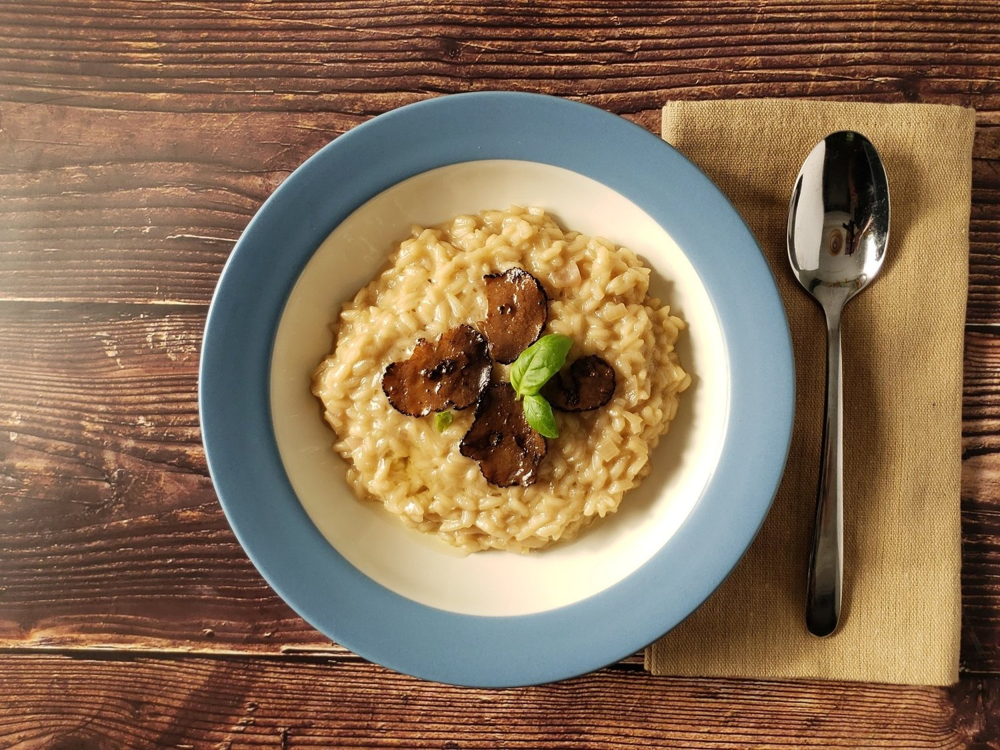

Back to Index
Black Truffle Risotto
A recipe created by Lemon Drop from A Receipe Reborn

A creamy blend of rice and cheese, topped off with slices of rare, fragrant black truffle.
Ingredients
Mushroom Broth:
- Water - 4 cups
- Mushrooms, sliced - 24 oz
Steps:
- Preheat the oven to 425°F/ 220°C.
- Place the mushrooms sliced side down on a baking pan in a single layer.
- Roast the mushrooms until their liquid releases, evaporates and you can smell a mushroomy aroma, about 20 minutes.
- Place the roasted mushrooms in a pot and add the water.
- Bring the pot to a boil, set the heat to low and simmer for 1 hour.
- Remove the mushrooms from the broth and discard them.
- Set the broth aside on a burner set to low to keep it warm while you prepare the risotto.
Risotto:
- Olive oil - 2 tbsp
- Shallot, diced - 2 oz
- Arborio rice - 1 cup
- Dry white wine - 1/2 cup
- Mushroom broth - 4 cups
- Butter, diced - 1/4 cup
- Parmigiano-Reggiano cheese, grated - 1.3 oz
- Truffle oil - 1 tsp
- Salt - to taste
Steps:
- Pour the olive oil into a pan and set it over medium heat.
- Add the shallot and allow it to sweat until it is soft and translucent.
- Add the rice and stir until all the grains are coated in oil
- Pour in the wine and stir, allow it to absorb into the rice and bring it to a gentle simmer.
- Add one ladle of broth, stir it in and allow it to absorb into the rice. Continue adding broth one ladle at a time when the consistency changes from liquid to creamy.
- After 15 minutes, taste the rice for doneness and seasoning.
- Remove the pan from the heat and add the butter, cheese, truffle oil, and salt to taste.
Garnish
- Black truffles, sliced
- Basil leaves
- Truffle oil
Back to Index